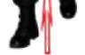

Burada dikkat edilmesi gereken, yürüme esnasında atış yapılırken kesinlikle duraklama yapılmaz, gözler sürekli hedefi gözlemeli, ayrıca yürüme hızı hedeflere isabet ettireceğiniz bir hızda olmalıdır.
Atış hızınız yakın mesafelerde hızlı, uzak mesafelere doğru gittiğinizde daha yavaş olmalıdır.
İleri Yürürken
Atış Pozisyonu
Resim-17.a) İleri Yürürken Öndeki Hedeflere Doğru Hareket Hâlinde Atış Tekniği 2.6.3. Geriye Doğru Yürüme Tekniği
Bu teknik ileri doğru yürüme tekniğinin tam tersidir. Geriye doğru yürüme ayakuçlarından ayak topuğuna doğru olmalıdır. Diğer vücut pozisyonu aynıdır.
2.6.4. Geriye Doğru Yürürken Öndeki Hedeflere Doğru Atış Tekniği İleriye doğru yürüme tamamlandıktan sonra verilen geriye doğru yürüme komutuyla atış pozisyonu bozulmadan geriye doğru yürüme tekniğine geçilir. Bu durumdayken yürüme ve atış hızı ayarlanarak aynı atış tekniği ile hedeflere doğru atış yapılır. (Bakınız Resim-17.b) 129


Geri Yürürken
Atış Pozisyonu
Geri
Yürüme
Resim-17.b) Geri Yürürken Öndeki Hedeflere Doğru Hareket Hâlinde Atış Tekniği 2.6.5. Yürürken Şarjör Değiştirme Tekniği
Yürürken şarjör değiştirme esnasında silah hedeften başka yöne doğru çevrilmez. Pasif elinizle şarjörü çıkarıp yere bırakırken yedek şarjörünüzü çıt sesi gelinceye kadar şarjör yuvasına itin. Aynı elinizle silahınızı kurup atışınıza devam edin. (Bakınız Resim-17.c)